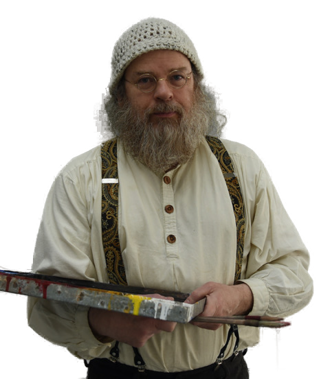

For as long as I can remember, I have drawn people, no space ships, cars or … It was always people who inspired me.” Mark Balma, artist, distinctly recalls his desire at age five to become an artist, and his early portraits of grade-school teachers and classmates at inner-city Ascension School in north Minneapolis provided a glimpse into his future. Today, at age 68, Balma has made his mark in contemporary portraiture and fresco painting.
Born in Wichita, Kansas, Balma grew up in Minneapolis. His elementary school teachers encouraged his interest in art and allowed him to decorate the walls of the Catholic school with murals and full-scale figures of saints. He enrolled in the Richard Lack's Atelier Studio at age sixteen. For four years he was immersed in this traditional 19th-century program that teaches classical drawing and painting through discipline of the hand-eye coordination and the accuracy of observation. “While attending the Atelier I saw a catalogue of Pietro Annigoni's painting, I then researched it further at the library where I found his address and wrote him and sent photos of my drawings. To my amazement he wrote me back and invited me to Florence and offered to help me as much as he could. I was 16 when his letter arrived and it changed my life and focused my energies toward Italy and my future plans to live and work there”.
“In my early twenties I set out to continue preparing a body of work in Florence near the studio of one of the world masters of portraits and frescoes”, Pietro Annigoni. Balma credits Annigoni for helping him develop the honesty in his work that is required for creating good portraits. He created a body of works in Italy, which were critiqued by the Master, and in 1981, at age 24, Balma held his first solo exhibition in Milan. From Italy, he moved to London where he spent time copying the Italian Masters in the National Gallery and held another exhibition at Leighton House Museum.
“In 1984 I returned to Minnesota and my first fresco project, Maestro Annigoni was very supportive of my goal to reintroduce the art of buon fresco in the U.S.”. Other fresco projects followed quickly as interest in this age-old, rigorous method of creating permanent painting increased. In the decade following this first commission, Balma created 14 frescoes ranging in size from 20 sq. ft. to 1900 sq. ft. on both sides of the Atlantic. His largest commission, the Seven Virtues of St. Thomas Aquinas, covers a 1,900 square-foot ceiling in the University of St. Thomas building in downtown Minneapolis. The creation of this fresco was the topic of a special documentary film, “Fresco”, aired on PBS in 1999.
“My home at this time was based in Assisi, Italy. I did ”Under the Umbrian Sun“ by restoring a stone school house in the hills surrounding Assisi. My house was on the road St. Francis would walk to Gubbio. There my life was immersed in an ancient village of Pieve San Nicolo. Many of my neighbors became the inspiration for my fresco and portrait works.”
In Minnesota, Balma has created frescoes in the Cathedral of St. Paul, St. Therese Church in Deephaven, Opus Corporation, Huber Funeral Home. In Italy, Balma created a fresco in his local parish, St. John the Baptist in Pieve San Nicolo, and as part of the Frescoes for Assisi project, he created a triptych fresco celebrating the 800th anniversary of the birth of Clare of Assisi. This fresco is now in the 13th cent chapel dedicated to Clare and represents one of the first new frescoes in Assisi in hundreds of years.
“After Years of fresco work my portrait was accepted in the Royal portrait Society of London, England. My portrait of Maryann Graziano was selected to receive portrait of the year award, but because I was not a British citizen they could not award me the public recognition. But my portrait was noticed by many art collectors and this began several years of painting official Presidential Portrait destined for Presidential Libraries.”
The challenge of creating life-size, dramatic historical portraits lured Balma away from fresco painting, and during an intense period from 1999 to 2009 he created four major works portraying world figures: portraits of four US Presidents and three British Prime Ministers for Presidential Libraries.
“My individual sittings with four US Presidents and three British Prime Ministers offered insight into history and the people that help create it. As I was not a journalist or politician our conversation were thoughtful and at times revealing and offered an understanding of current world events that I would have never understood. I kept a daily journal of our sittings and maybe one day they will find a place in my biography.”
Balma has created many works for the church. His most recent paintings for the Cathedral of Saint Paul, “The Prodigal Son” and the Basilica of Saint Mary “My Dove in the Clefts of the Rock” carrying on the tradition of the early Italian Masters. A life long interest in Leonardo da Vinci has inspired two facsimile paintings of the original Mona Lisa and Salvator Mundi.
“In this chapter of my life I want to continue creating art in the church using the variety of techniques that I have practiced and hopefully passing on to others what I have learned in a studio/school I will create in Assisi, Italy. It is there I will also continue to explore the art of portraiture and the spirit in art that brings us all closer to God”.
Now in Terni, near Assisi: Women of Faith, ten panels of 15 × 20 ft each for the Church of the Immaculate Conception. Three are completed, and Ruth and Naomi comes next year.
“I painted four US Presidents and three British Prime Ministers for Presidential Libraries. It was interesting meeting these leaders and I got along with them very well. We shared some great conversations during our sittings.”— Mark Balma